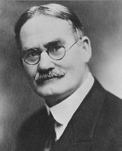
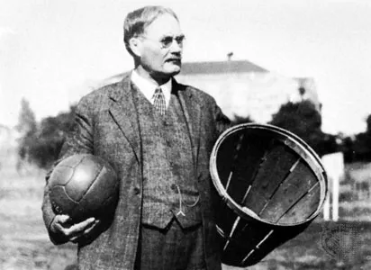

Στις αρχές Δεκεμβρίου του 1891, ο Καναδός Δρ. Τζέιμς Νάισμιθ, καθηγητής φυσικής αγωγής στο Εκπαιδευτήριο της Χριστιανικής Αδελφότητας Νέων YMCA (σημερινό Κολέγιο Σπρίνγκφιλντ) στο Σπρίνγκφιλντ, Μασαχουσέτη, Η.Π.Α.), προσπαθούσε να κρατήσει μία τάξη δραστήρια με την οποία έκανε μάθημα μια βροχερή μέρα. Αναζητούσε ένα δυναμικό παιχνίδι εσωτερικού χώρου και στα κατάλληλα επίπεδα φυσικής κατάστασης κατά τη διάρκεια του μακρύτατου χειμώνα της Νέας Αγγλίας. Αφού απέρριψε άλλες ιδέες, είτε ως υπερβολικά τραχιές ή ακατάλληλες για κλειστά γυμναστήρια, έγραψε τους βασικούς Κανόνες της Καλαθοσφαίρισης και κάρφωσε ένα καλάθι ροδάκινων σε ύψος 3,03 μέτρων. Σε αντίθεση με τα σύγχρονα δίχτυα καλαθοσφαίρισης, αυτό το καλάθι ροδάκινων αρχικά διατηρούσε τον πάτο του, και οι μπάλες έπρεπε να ανακτηθούν με το χέρι μετά από κάθε «καλάθι» ή πόντο που σημειωνόταν, από κάποιον που ανέβαινε σε σκάλα, και να ριφθούν πάλι πίσω στον αγωνιστικό χώρο. Αυτό αποδείχθηκε αναποτελεσματικό και χρονοβόρο. Έτσι σύντομα το κάτω μέρος του καλαθιού αφαιρέθηκε, πράγμα που επέτρεπε να ξαναπέφτει απευθείας η μπάλα. Μεταγενέστερα, προστέθηκε και ένα δίχτυ κάτω από τη στεφάνη του καλαθιού, με σκοπό να μειώνεται η ταχύτητα της μπάλας κατά την πτώση της, αφού έχει μόλις μπει στο καλάθι, έτσι ώστε να αποφευχθεί ενδεχόμενος κίνδυνος τραυματισμού των παικτών που θα τύχει να είναι κάτω από το καλάθι.
Η καλαθοσφαίριση την πρώτη φορά παίχτηκε με μια μπάλα αμερικάνικου ποδοσφαίρου (ράγκμπι). Οι πρώτες μπάλες που δημιουργήθηκαν ειδικά για την καλαθοσφαίριση ήταν καφέ, και ήταν μόνο στα τέλη της δεκαετίας του 1950 που ο Τόνι Χάινκλ, ψάχνοντας για μια μπάλα που θα είναι πιο ευδιάκριτη για τους παίκτες και τους θεατές, εισήγαγε την πορτοκαλί μπάλα που χρησιμοποιείται σήμερα. Η ντρίμπλα δεν υπήρχε στο αρχικό παιχνίδι, εκτός από την «σκαστή πάσα» για τους συμπαίκτες. Η πάσα ήταν το κύριο μέσο μετακίνησης της μπάλας. Η ντρίμπλα τελικά εισήχθη, αλλά περιοριζόταν από το ασύμμετρο σχήμα της πρώτης μπάλας. Η ντρίμπλα έγινε σημαντικό μέρος του παιχνιδιού μέσα στη δεκαετία του 1950, καθώς βελτιώθηκε το σχήμα της μπάλας.
